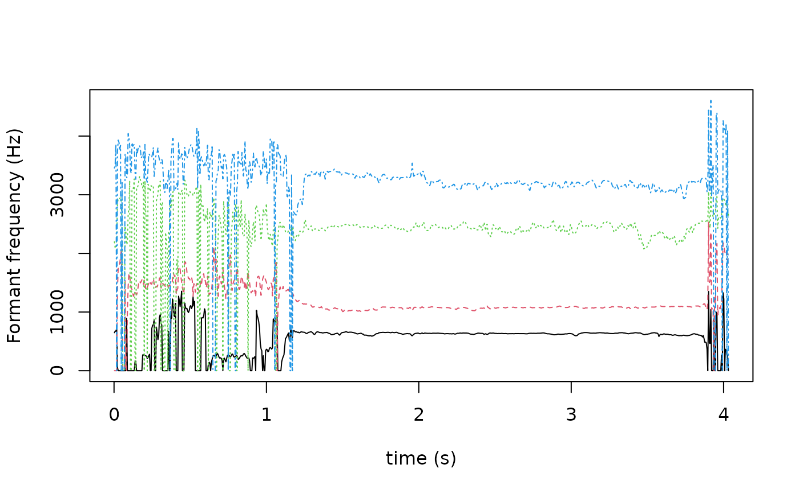

Track formant frequencies and bandwidths (FOREST)
trk_formant_forest.RdEstimates vocal tract resonance (formant) frequencies and their bandwidths
using the FOREST algorithm from the libassp C library
(Scheffers 2012)
. Root-solving of the LP polynomial is guided by
Pisarenko frequencies from the Split-Levinson Algorithm (SLA) to classify
resonances as formants. Prefer trk_formant_forest when broad
compatibility and speed on large corpora are priorities.
Usage
trk_formant_forest(listOfFiles, beginTime = 0, endTime = 0, windowShift = 5, windowSize = 20, effectiveLength = TRUE, nominalF1 = 500, gender = "m", estimate = FALSE, order = 0, incrOrder = 0, numFormants = 4, window = "BLACKMAN", preemphasis = -0.8, toFile = TRUE, explicitExt = "fms", outputDirectory = NULL, assertLossless = NULL, logToFile = FALSE, convertOverwrites = FALSE, keepConverted = FALSE, verbose = TRUE)Arguments
- listOfFiles
Character vector of audio file paths. Any format supported by av is accepted; non-native inputs are transcoded automatically.
- beginTime
Numeric. Start of analysis window in seconds. Default 0 (file start).
- endTime
Numeric. End of analysis window in seconds. Default 0 (file end).
- windowShift
Numeric. Frame shift in milliseconds; sets output frame rate (1000 / windowShift Hz). Default 5 ms.
- windowSize
Numeric. Analysis window size in milliseconds. Default 20 ms.
- effectiveLength
Logical. Make window size effective rather than exact. Default
TRUE.- nominalF1
Numeric. Assumed F1 frequency in Hz used to build the formant range table. Increase by ~12% for female voices. Default 500.0 Hz.
- gender
Character. Gender-specific parameter preset:
"f"(female, sets window to 12.5 ms and nominalF1 to 560 Hz),"m"(male), or"u"(unknown, default).- estimate
Logical. Insert rough frequency estimates for missing formants rather than returning zero. Default
FALSE.- order
Integer. Decrease the default LPC filter order by 2 (one fewer resonance). Default 0 (no change).
- incrOrder
Integer. Increase the default LPC filter order by 2 (one more resonance). Default 0 (no change).
- numFormants
Integer. Number of formants to track (maximum 8 or half the LPC order). Default 4.
- window
Character. Analysis window function type. Default
"BLACKMAN". See AsspWindowTypes.- preemphasis
Numeric. Pre-emphasis factor (-1 <= val <= 0); default is sample-rate- and nominalF1-dependent.
- toFile
Logical. If
TRUE, write SSFF output files and return the count written (invisibly). IfFALSE, return anAsspDataObj. DefaultTRUE.- explicitExt
Character. Output file extension. Default
"fms".- outputDirectory
Character. Directory for output files.
NULL(default) writes alongside the input file.- assertLossless
Character vector of additional file extensions to treat as losslessly encoded.
- logToFile
Logical. Write processing log to a file in
outputDirectoryrather than the console. DefaultFALSE.- convertOverwrites
Logical. Allow transcoding to overwrite existing files. Default
FALSE.- keepConverted
Logical. Retain intermediate transcoded files. Default
FALSE.- verbose
Logical. Print per-file progress. Default
TRUE.
Value
If toFile = FALSE: an AsspDataObj with tracks:
F[Hz]REAL32, Hz, n_frames x
numFormantscolumns. Estimated centre frequency of each formant (0 = missing).B[Hz]REAL32, Hz, n_frames x
numFormantscolumns. Bandwidth of each formant.
Frame rate: 1000 / windowShift Hz (default 200 Hz).
If toFile = TRUE: integer count of files written, returned invisibly.
Details
The gender preset overrides windowSize and nominalF1.
Set estimate = TRUE to fill missing formant slots with rough estimates
rather than zeros, which can help downstream processing.
Examples
# get path to audio file
path2wav <- list.files(system.file("samples","sustained", package = "superassp"), pattern = glob2rx("a1.wav"), full.names = TRUE)
# calculate formant values
res <- trk_formant_forest(path2wav, toFile=FALSE)
#> Applying `method(trk_formant_forest, class_character)()` to 1 recording
# plot formant values
matplot(seq(0, n_records(res) - 1) / sample_rate(res) +
attr(res, 'startTime'),
res[["F[Hz]"]],
type='l',
xlab='time (s)',
ylab='Formant frequency (Hz)')
